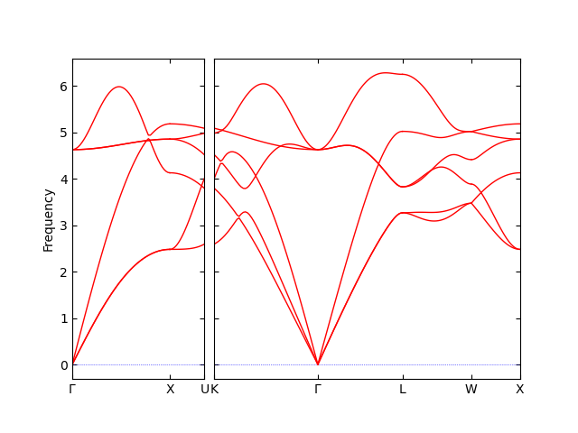

VASP-DFPT & phonopy calculation#
How to run#
VASP can calculate force constants in real space using DFPT. The procedure to calculate phonon properties may be as follows:
Prepare unit cell structure named, e.g.,
POSCAR-unitcell. The following structure is a conventional unit cell of NaCl.Na Cl 1.00000000000000 5.6903014761756712 0.0000000000000000 0.0000000000000000 0.0000000000000000 5.6903014761756712 0.0000000000000000 0.0000000000000000 0.0000000000000000 5.6903014761756712 4 4 Direct 0.0000000000000000 0.0000000000000000 0.0000000000000000 0.0000000000000000 0.5000000000000000 0.5000000000000000 0.5000000000000000 0.0000000000000000 0.5000000000000000 0.5000000000000000 0.5000000000000000 0.0000000000000000 0.5000000000000000 0.5000000000000000 0.5000000000000000 0.5000000000000000 0.0000000000000000 0.0000000000000000 0.0000000000000000 0.5000000000000000 0.0000000000000000 0.0000000000000000 0.0000000000000000 0.5000000000000000
Prepare a perfect supercell structure from
POSCAR-unitcell,% phonopy-init -d --dim 2 2 2 -c POSCAR-unitcell
This command writes
SPOSCAR,phonopy_disp.yaml, and the displacement cellsPOSCAR-{number}. For VASP-DFPT, only the perfect supercellSPOSCARis needed, and it will be used asPOSCARof the VASP calculation in the next step. The displacement cellsPOSCAR-{number}are not used here, whereasphonopy_disp.yamlis needed because it is read byphonopyin the post-process.Calculate force constants of the perfect supercell by running VASP with
IBRION = 8. An example ofINCARfor an insulator may look like (just an example!)PREC = Accurate ENCUT = 500 IBRION = 8 EDIFF = 1.0e-08 IALGO = 38 ISMEAR = 0; SIGMA = 0.1 LREAL = .FALSE. ADDGRID = .TRUE. LWAVE = .FALSE. LCHARG = .FALSE.
After finishing the VASP calculation, confirm
vasprun.xmlcontainshessianelements, and then createFORCE_CONSTANTSby% phonopy-init --fc vasprun.xml
Run phonopy
% phonopy --band auto -p _ _ __ | |__ ___ _ __ ___ _ __ _ _ | '_ \| '_ \ / _ \| '_ \ / _ \ | '_ \| | | | | |_) | | | | (_) | | | | (_) || |_) | |_| | | .__/|_| |_|\___/|_| |_|\___(_) .__/ \__, | |_| |_| |___/ 4.3.1 -------------------------[time 2026-07-03 16:51:48]------------------------- Rust backend (phonors) using rayon (10 threads). Running in phonopy.load mode. Python version 3.13.11 Spglib version 2.7.0 WARNING: primitive_matrix defaulted to 'auto' and was resolved to a non-identity matrix: [ 0.00000, 0.50000, 0.50000] [ 0.50000, 0.00000, 0.50000] [ 0.50000, 0.50000, 0.00000] This differs from phonopy v3, whose default was the identity matrix. Pass primitive_matrix='P' (or --pa P on the command line) to restore the v3 behaviour. Crystal structure was read from "phonopy_disp.yaml". Unit of length: angstrom Band structure mode (Auto) Settings: Supercell: [2 2 2] Primitive matrix (Auto): [0. 0.5 0.5] [0.5 0. 0.5] [0.5 0.5 0. ] Spacegroup: Fm-3m (225) Number of symmetry operations in supercell: 1536 Use -v option to watch primitive cell, unit cell, and supercell structures. Force constants were read from "FORCE_CONSTANTS". Force constants format was transformed to compact format. Max drift after symmetrization by symfc projector: -0.00000000 (yy) -0.00000000 (yy) SeeK-path is used to generate band paths. About SeeK-path https://seekpath.readthedocs.io/ (citation there-in) Reciprocal space paths in reduced coordinates: [ 0.000 0.000 0.000] --> [ 0.500 0.000 0.500] [ 0.500 0.000 0.500] --> [ 0.625 0.250 0.625] [ 0.375 0.375 0.750] --> [ 0.000 0.000 0.000] [ 0.000 0.000 0.000] --> [ 0.500 0.500 0.500] [ 0.500 0.500 0.500] --> [ 0.500 0.250 0.750] [ 0.500 0.250 0.750] --> [ 0.500 0.000 0.500] Summary of calculation was written in "phonopy.yaml". -------------------------[time 2026-07-03 16:58:27]------------------------- _ ___ _ __ __| | / _ \ '_ \ / _` | | __/ | | | (_| | \___|_| |_|\__,_|

phonopyreadsFORCE_CONSTANTSautomatically when the file is found alongsidephonopy_disp.yaml. Settings can be supplied through a configuration file:% phonopy band.conf
{kind=link}
Non-analytical term correction (Optional)#
Non-analytical term correction requires the Born effective charges and
dielectric constant supplied through a BORN file (BORN (optional)).
These are obtained from a separate VASP calculation with LEPSILON = .TRUE., and the BORN file can be generated with the phonopy-vasp-born
auxiliary tool. The procedure is identical to the finite-displacement
case; see VASP & phonopy calculation for details.